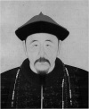

Çin tarihinin en büyük monarklarından İmparator Kangxi (1654-1722), 61 yıl boyunca tahtta kalmıştır. Orta Krallık döneminde yaşanan büyüme ve refah çağına liderlik etti. Tayvan ve Tibet’teki asileri yenilgiye uğrattığına inanılmaktadır. Ülkenin sınırlarını genişletmiş ve Batı’daki yenilikleri ülkesine tanıtmıştır.

İmparator Kangxi henüz yedi yaşındayken tahta çıkmıştı. Qing Hanedanı’nın ikinci kralıydı. Kuzeydeki Mançurya’dan gelen bu hanedan, tahtı 1644 yılında Ming Hanedanı’nın elinden almıştı.
Qing Hanedanı, Çin İmparatorluk sisteminde otoritenin asıl kaynağı olan “Göksel Yetki”ye (mandate of heaven) sahip olduğunu iddia etmesine ve Pekin’deki Yasak Şehre yerleşmesine rağmen isyanlarla boğuşmaktan kurtulamadı. Kangxi, hükümdarlığının ilk dönemlerinde Güney Çin ve Tayvan’daki karışıklıklara karşı askeri harekatlar düzenledi. 1673-1681 yılları arasında ise üç asi generale karşı iç savaş vermesi gerekti.
1690 yılına gelindiğinde imparator muhalefeti büyük ölçüde bastırmıştı. Alimleri yeniden devlet hizmetine girmeye davet edip Çin edebiyatını (Qin Hanedanı Mandarin Çincesi değil Mançu konuşuyordu) destekleyerek eski Ming Hanedanı’nın destekçilerini yanına çekmeye çalıştı.
Batı ile olan ilişkiler İmparatorun döneminde gelişmeye başladı. Bu durum sık sık gerilimin yükselmesine neden oluyordu. 1688 ve 1689 yıllarında Rusya ile savaştı. 1706 yılında Çin’deki Katolik nüfusunu kontrol etmeye çalışan Papalık temsilcilerini sınırdışı etti. Ancak politik amaçları olmadığı sürece dış etkilere açıktı. Cizvit matematikçilerini ve astronomları sarayına davet etti.
Tahttaki son yıllarına Tibet’teki iç savaş damgasını vurdu. Savaş altmış sekiz yaşında Pekin’de ölmesinden hemen önce son bulmuştu. Yirmi dört oğlu arasında taht kavgası çıktı. Dördüncü en büyük oğlu Yongzheng (1678-1735) bu mücadeleyi kazanarak imparator oldu.
Ek Bilgiler
1- Qing hanedanı Çin’e hükmeden son imparatorluk oldu. Hanedanın son imparatoru 1912 yılında görevden alınmıştır.
2- Kangxi Çin Seddi’ni askeri kullanımdan çıkardı. Buna karşılık bir başka önemli eser olan 1770 km’lik “Büyük Kanal”ın onarılması emrini verdi. Kanal insan yapımı su yollarının en eski ve en uzunlarından biriydi. MÖ 600 yılından beri kullanıldığı tahmin edilmektedir.
3- Çin İmparatorları için kullanılan isim sistemine göre Kangxi’nin üç ismi vardı: Doğum ismi Aisin-Gioro Xuanye, imparator olarak kullandığı ad Kangxi ve ölümünün ardından kullanılan seremonik ismi Shengzu.